behr.30@osu.edu
Thurs 1 - 2
Minor: Statistics
Experiences: N/A
Involvement: Big Data and Analytics Association, AI Club, Competitive Programming Club
Interests: Play games, I enjoy cooking, watching the occasional netflix show
Specialization: AI, Databases and related technology
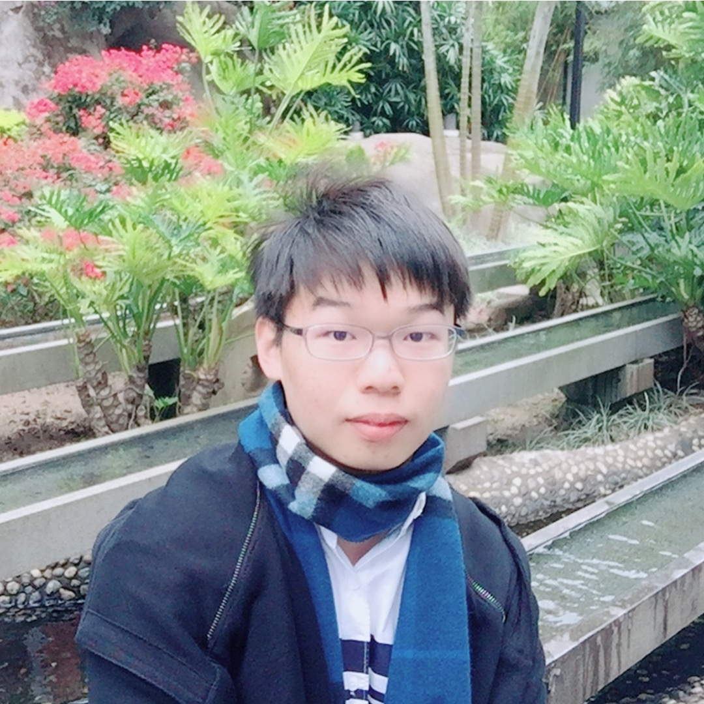
Ron Chen
chen.8336@osu.edu
Tues 9 - 10
Minor: Mathematics, Philosophy (about to quit)
Experiences: CSE 2321 grader
Involvement: Chinese Students and Scholars Society
Interests: Languages (Speaking CHN/ENG/JPN and a little bit KOR), Pop Music (Kpop, Jpop, American pop, ...), Japanese Animation, TV Series
Specialization: Natural Language Processing and Machine Learing
Corinne Dixon
dixon.773@osu.edu
Wed 3 - 4
Minor: Mathematics
Experiences: Software Intern at EDGE Exponential in Gahanna, OH
Involvement: Society of Women Engineers, Block O
Interests: playing card and board games, watching movies/tv with friends, playing tennis, and getting ice cream from all of the great places that are around campus
Specialization: artificial intelligence
Sam Folz
folz.10@osu.edu
Wed 2 - 3
Minor: Business (planning)
Experiences: ISM Intern at UPS working remotely
Involvement: Delta Tau Delta Fraternity, Cyber Security Club, Euchre Club
Interests: Play video games, golf, run, watch YouTube, listen to podcasts
Specialization: Application development, artificial intelligence
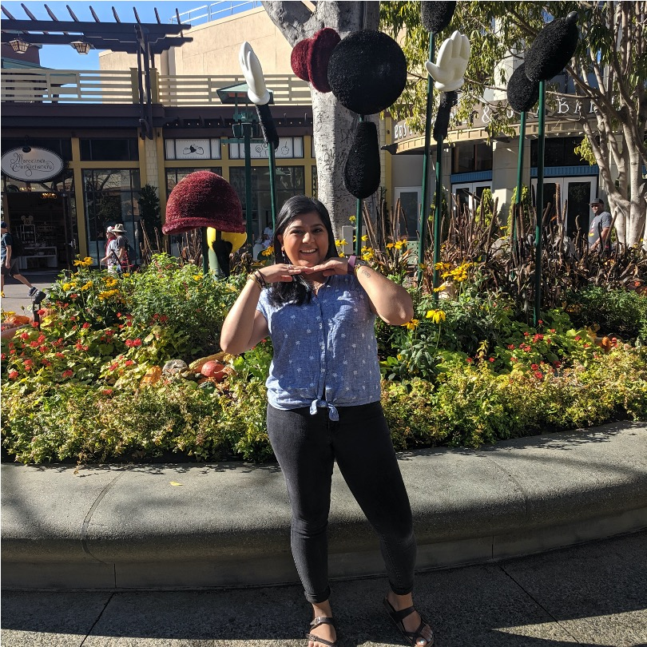
Aastha Gupta
gupta.911@osu.edu
Mon 10 - 11
Minor: Business
Experiences: Electronics Engineering Intern at Northrop Grumman Aeronautics Systems in Melbourne, Florida
Involvement: Society of Women Engineers, Girls Who Code: College Loops at Ohio State
Interests: cooking, having wine and movie nights, working out, trying new restaurants, playing board games
Specialization: software engineering, computer networking
hoffmann.323@osu.edu
Tues 9 - 10
Minor: N/A
Experiences: N/A
Involvement: The Maker Club at The Ohio State University
Interests: play guitar and piano, rocket league
Specialization: Software Engineering
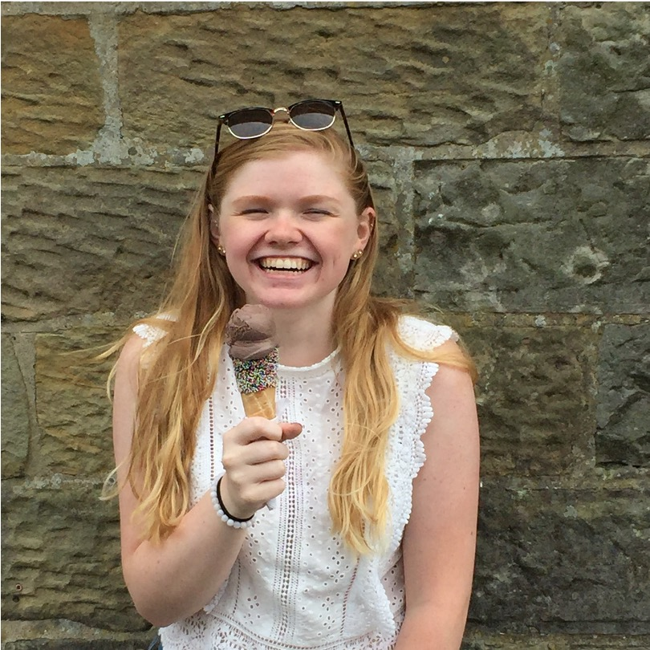
Alicia Kiser
kiser.142@osu.edu
Tues 11 - 12
Minor: Communication Technology
Experiences: Ohio Space Grant Consortium Summer Intern at Ohio Aerospace Institute in Cleveland, Ohio; CSE 1223 Grader
Involvement: SWE
Interests: Longboarding, cooking, and playing games on my switch
Specialization: Software Engineering
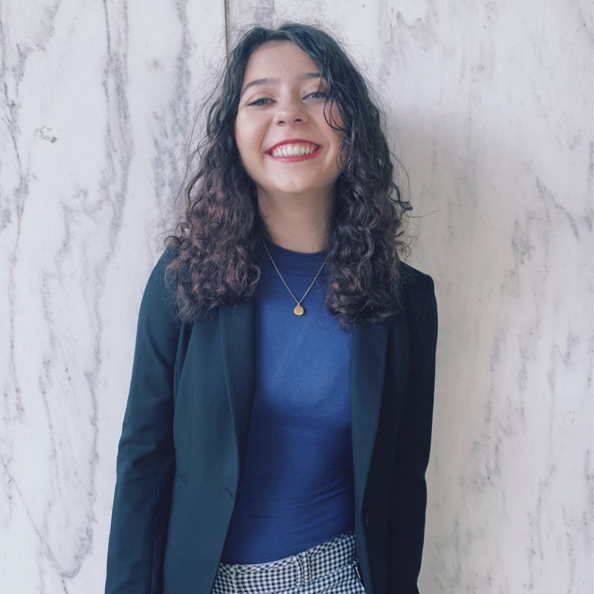
Kayla Manouchehri
manouchehri.4@osu.edu
Wed 2 - 3
Minor: statistics
Experiences: Software Engineering Intern at STERIS; I also taught coding camps through TechCorps
Involvement: Phi Sigma Rho, A Kid Again, and BDAA
Interests: Baking(I run an Instagram with my friend; shameless promo: @cota.cakes), running, writing poetry, volunteering at the library, and playing the piano
Specialization: Cybersecurity or software engineering
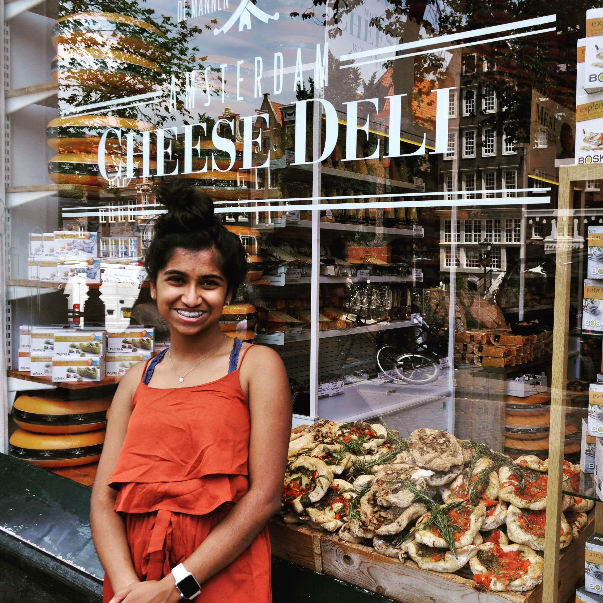
Smera Palanivel
palanivel.7@osu.edu
Wed 3 - 4
Minor: Psychology, Economics
Experiences: Support Intern at Unific, Tech Intern at MatchTx, Research at Machiraju Lab
Involvement: BDAA, ACM-W, Buckeyethon, Buckeye Mela
Interests: Running, cooking, skiing, trying new restaurants in Cbus, hiking, watching Criminal Minds!
Specialization: Data science and software engineering
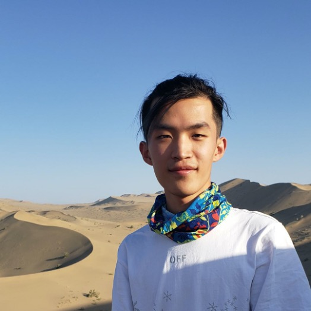
Gengyi Qin
qin.439@osu.edu
Tues 11 - 12
Minor: Math
Experiences: Short research with Boyuan Li from CSE department, CSE 1222 grader
Involvement: Residential Tutor
Interests: Music, driving, gaming
Specialization: Data/software/info security
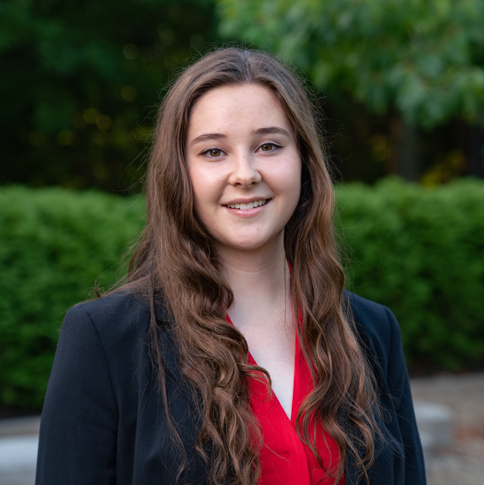
Laine Rumreich
rumreich.1@osu.edu
Tues 9 - 10
Minor: No
Experiences: Software Engineering Intern at Raytheon Intelligence in Indianapolis, IN; Software Engineering Intern;
Product Security Team at Tableau Software in Seattle, WA; URA and GRA in the Engineering Education Department;
Working on master's thesis on the formal verification of a binary decision diagram
Involvement: SWE, ACM-W, Women in Cybersecurity (WiCyS), Council of Graduate Students Senator
Interests: I enjoy reading, board games, and golf
Specialization: Theory, security, networking, compilers, distributed computing
Adam Schutte
schutte.61@osu.edu
Thurs 1 - 2
Minor: No
Experiences: Embedded Software Engineering Intern at Crown Equipment, Front-End Developer Intern at Crown Equipment,
Web Programming Interfaces Intern at SAS, Software Development Intern at Blubrry Podcasting, Software Development Engineering Intern at Expedia Group
Involvement: Casual Sports Club
Interests: Running, cooking, playing music, and watching sports
Specialization: Web Development, UI/UX engineering, Mobile Apps
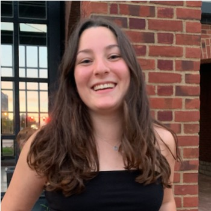
Mallory Sharp
sharp.475@osu.edu
Mon 10 - 11
Minor: Studio Art
Experiences: None
Involvement: SWE (Society of Women Engineers), ACMW (Association for Computing Machinery's council for Women), AWOW (Advocates for Women of the World), Code for Community
Interests: In my free time I like to run and spend time outside. I also love to hang out with my friends and explore Columbus! I love going downtown, or to the short north on weekends.
Specialization: software engineering; intersections with humanitarianism
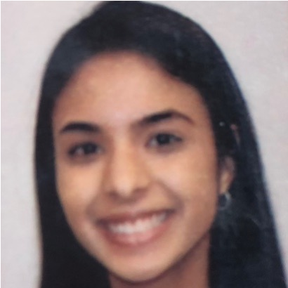
Pranjal Suri
suri.39@osu.edu
Tues 11 - 12
Minor: Communication technology
Experiences: Undergraduate engineering teaching assistant
Involvement: ACM-W
Interests: Run
Specialization: Software engineering
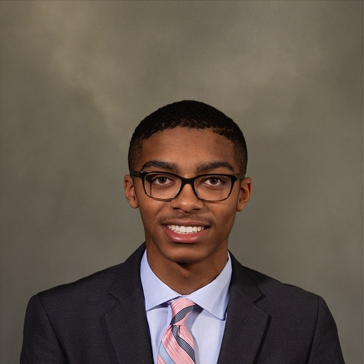
Jamie Tucker
tucker.775@osu.edu
Mon 10 - 11
Minor: N/A
Experiences: STEP Intern at Google
Involvement: National Society of Black Engineers (NSBE), Morrill Scholarship Program (MSP), Second-Year Transformational Experience Program (STEP)
Interests: Video Games (PS4, Switch), Watching Sports (Football & Basketball), Working Out, Making Music Mashups, Watching Movies
Specialization: Software Engineering, Front-End Web/Mobile Development
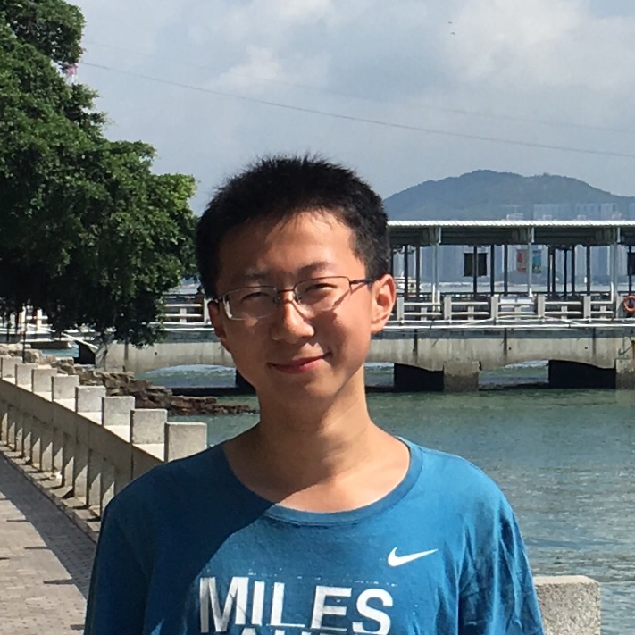
Kyle Xiong
xiong.336@osu.edu
Wed 3 - 4
Minor: No
Experiences: Summer Research Project, advised by Prof. Han-Wei Shen at Ohio State
Involvement: Chinese Folk Music Orchestra
Interests: playing bamboo flute
Specialization: Machine Learning, Data Visualization
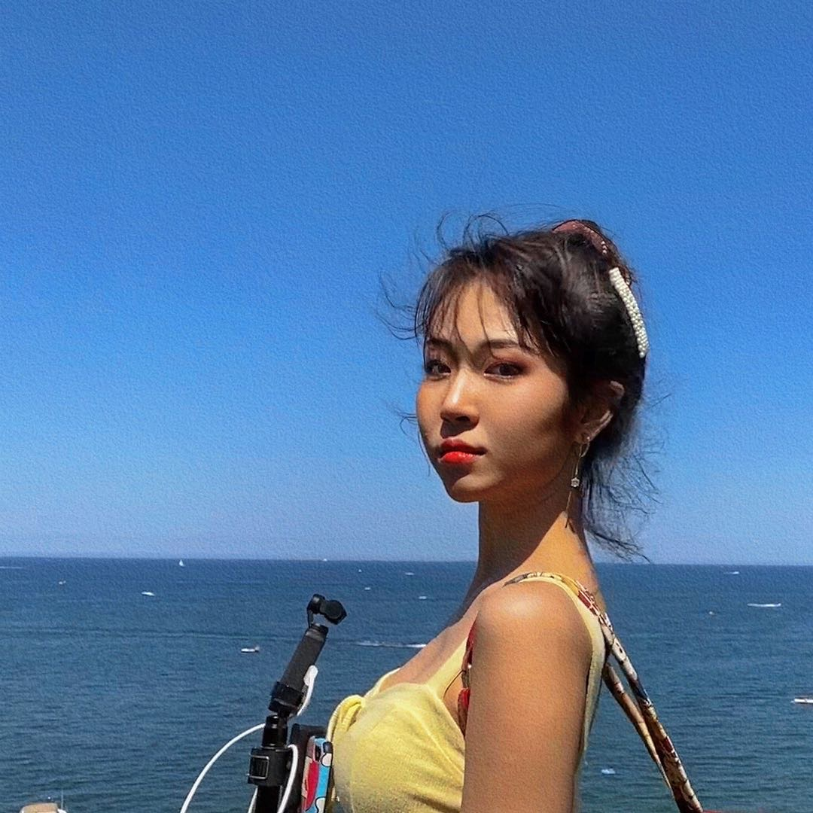
Zina Zhang
zhang.9485@osu.edu
Wed 2 - 3
Minor: Math and Communication
Experiences: 3 Day Paid ME RESEARCH WITH RELIABILITY AND RISK LABORATORY; RESOLVE Software Research Group
Involvement: Office Assistant in the resident hall; Media Marketing and Communication Scholar Program; Chinese Student and Scholar Society; Buck-I-Serve in Florida; Pre Departure Orientation
Interests: Do Vlogs; Dance; Wall Climb
Specialization: Software Proof; Graphics